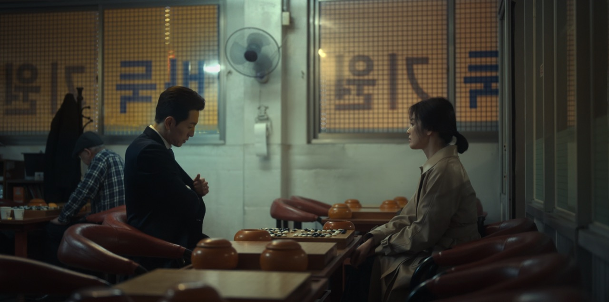

BETA 지금은 넷플릭스에서만 지원합니다
넷플릭스 재생 화면에 채팅창이 붙습니다. 이 장면을 먼저 본 사람들의 말이, 내가 그 지점에 닿을 때 도착합니다.
Chrome 120 이상에서 사용 가능

모두가 숨죽인 장면, 웃음이 터진 장면이 재생바 위에 그대로 보여요. 궁금한 순간으로 건너뛰면, 그 장면의 수다에 바로 끼어들 수 있어요.
누적 감상 시간이 많은 작품 순입니다. 채팅이 남아 있으면 그중 하나를 함께 보여드립니다.
때로는 더 많은 사람들과, 때로는 소중한 사람들과.
Replix에서 당신의 시청 무드를 선택해 보세요.
웹 스토어에서 한 번 누르면 끝입니다. 로그인은 Google 계정으로 한 번만 하면 됩니다.
넷플릭스에서 평소처럼 재생하면 패널이 화면 오른쪽에 붙습니다. 접어 두었다가 원할 때 펼칠 수 있습니다.
지금 보는 장면에 남긴 말은 그 시점에 묶여, 나중에 이 장면에 닿는 사람에게 도착합니다.
설치하면 넷플릭스 재생 화면에서 바로 켜집니다. 오늘 밤 보려던 회차에도 이미 누군가의 말이 있습니다.
Chrome에 Replix 설치하기무료로 시작 · 30초 설치 · 안전한 사용